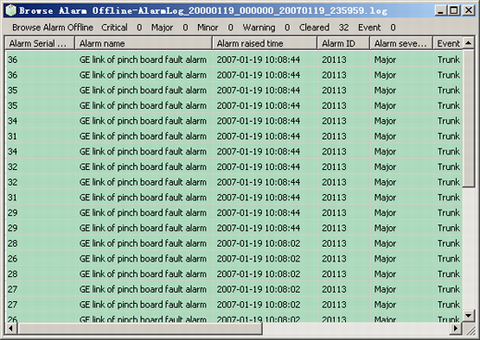

This describes how to browse the alarm log files that are stored in the local PC.
Prerequisite
Procedure
- Choose . A dialog box is displayed.
- Select an alarm log file and click Open. The contents of the file are displayed, as shown in Figure 1.
Figure 1 Contents of an alarm log file
- Right-click the alarm to be queried, and then choose from the shortcut menu.
Postrequisites
As shown in Figure 1, the shortcut menu also provides the following options:
- : Save all the alarms to the local PC as a .txt file.
- : Save the selected log to the local PC as a .txt file.
- : Set the alarm information to be displayed.
- : Display the alarms that meet specific conditions.
Copyright © Huawei Technologies Co., Ltd.